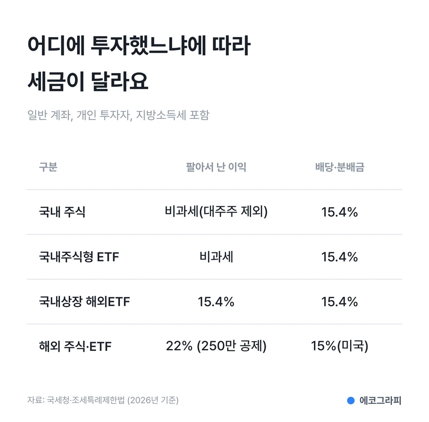
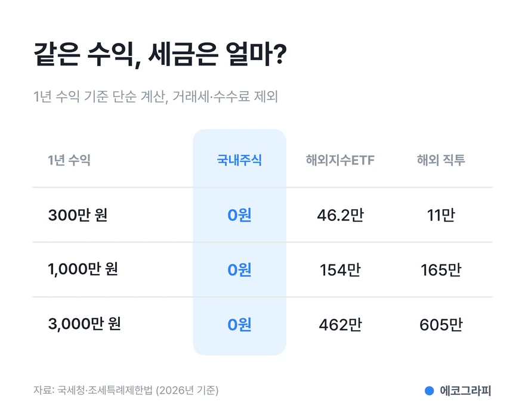
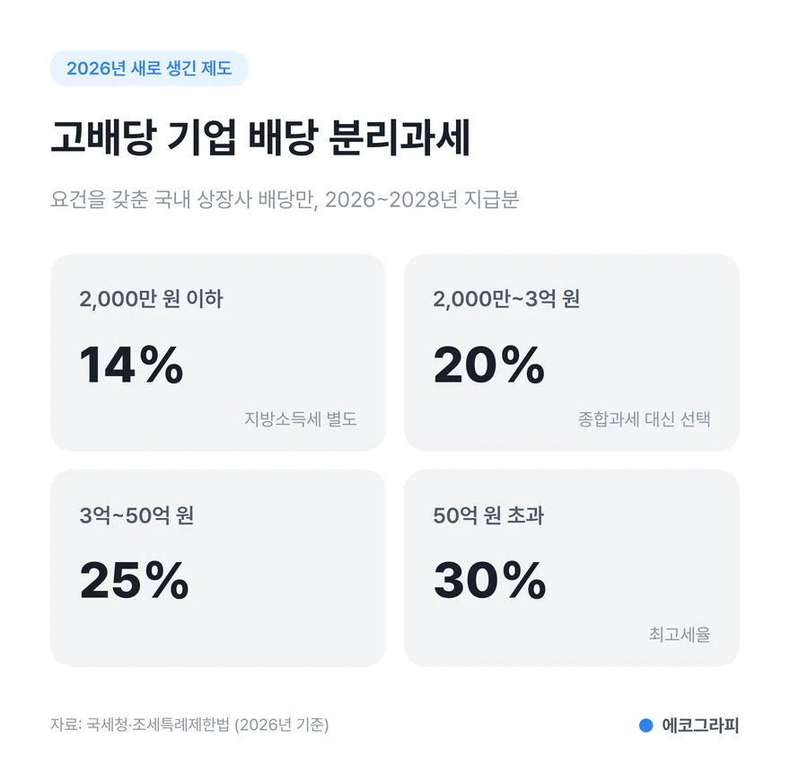
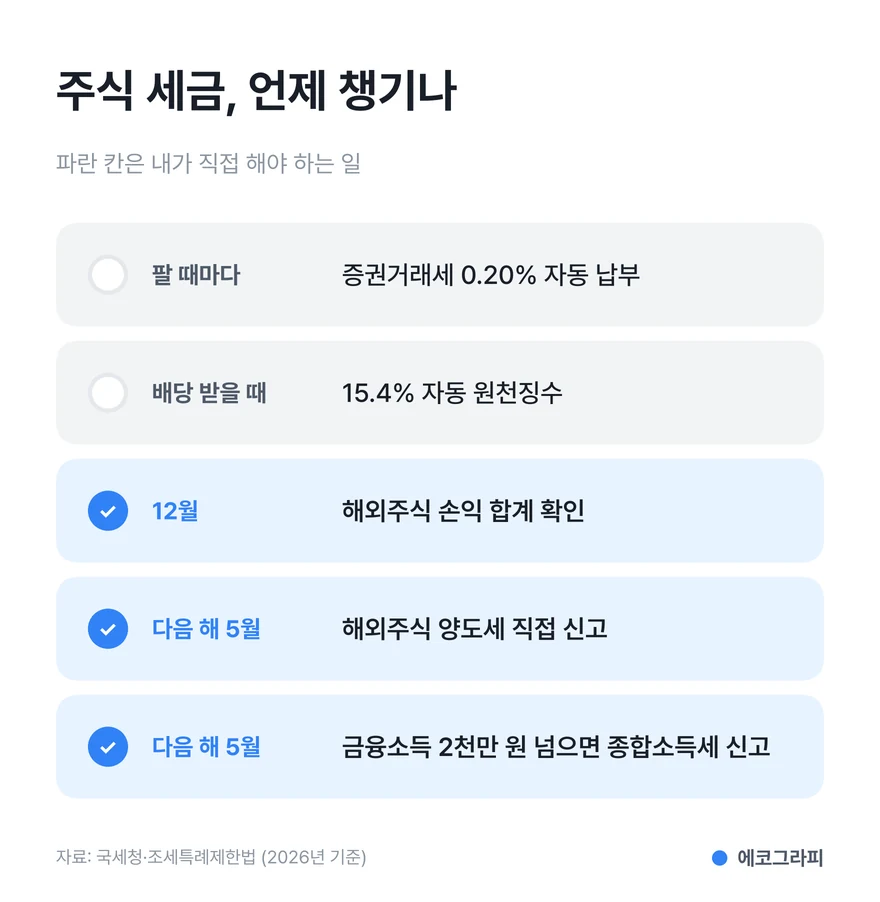

한때 이야기가 많았던 금융투자소득세(금투세)는 폐지돼서 시행되지 않아요. 2026년 지금은 위 표대로 세금이 붙습니다.
국내 주식은 대부분 증권사가 알아서 떼 가요. 내가 따로 신고할 일은 거의 없습니다.
미국 주식 같은 해외 주식은 1년(1~12월) 동안의 이익과 손실을 합친 금액에서 250만 원을 빼고 22%를 내요. 증권사가 대신 떼 주지 않아서 다음 해 5월에 직접 신고·납부해야 합니다.
예를 들어 올해 해외 주식으로 1,000만 원을 벌었다면 (1,000만 − 250만) × 22% = 165만 원이에요. 같은 해 다른 종목에서 300만 원 손실이 났다면 이익이 700만 원으로 줄어 세금도 줄어요.

절세 팁: 연말에 수익이 250만 원을 넘었다면, 손실 중인 종목을 팔아 손익을 맞추는 방법이 있어요. 그해 12월 말 결제분까지 그해 손익으로 잡히니 날짜를 확인하세요.
5월 신고를 놓치면 무신고 가산세가 붙어요. 많은 증권사가 양도세 신고 대행 서비스를 무료로 제공하니 4월쯤 신청해 두세요.
같은 S&P500 ETF라도 국내 상장이면 매매차익에 15.4%(배당소득세), 미국 상장이면 양도세 22%(250만 원 공제)예요. 위 표처럼 수익이 작으면 해외 직투가, 수익이 커질수록 국내 상장이 유리해지는 경향이 있어요.
다만 국내 상장 해외ETF의 이익은 금융소득이라 이자·배당과 합쳐 2,000만 원을 넘으면 종합과세될 수 있어요. 연금저축·ISA 같은 절세계좌에선 국내 상장 ETF만 살 수 있고 세금도 훨씬 줄어듭니다. 자세한 건 ETF 기초 글을 참고하세요.
이자와 배당을 합친 금융소득이 1년에 2,000만 원을 넘으면 넘는 부분을 근로소득 등과 합쳐 다시 계산해요(금융소득종합과세). 소득이 높을수록 세율이 올라가죠.
2026년부터는 배당을 많이 주는 등 요건을 갖춘 국내 상장사의 배당에 한해, 합산 대신 따로 낮은 세율로 계산할 수 있게 됐어요. 2026년에 받은 배당부터 적용되고, 신고는 2027년 5월부터예요.


1년 합계가 손실이거나 250만 원 이하라면 낼 세금은 없어요. 다만 증권사 안내에 따라 신고해 두면 기록 관리에 좋아요.
아니요. 해외주식 손익은 그해 안에서만 합산돼요.
미국에서 15%가 떼이고, 한국 세율(14%)보다 높아 보통 추가로 내지 않아요. 다만 금융소득 2,000만 원 계산에는 들어가요.
회사가 주주총회 후 공시해요. 국세청도 신고 때 대상 여부를 안내할 계획이라고 밝혔어요.
증여세 문제가 생길 수 있어요. 큰 금액은 세무 전문가와 상담하세요.
※ 2026년 11월 기준으로 정리한 글입니다. 세율·제도는 바뀔 수 있으니 거래 전 증권사·국세청 안내를 한 번 더 확인하세요. 특정 종목·상품의 매수·매도 권유가 아닙니다.